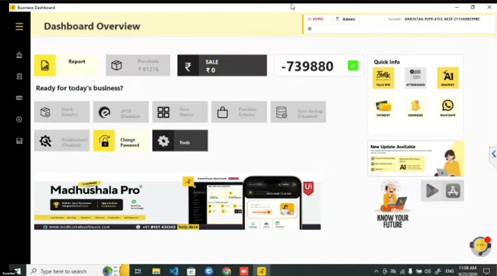

Duplicate Data Entry
Maintaining the same information across multiple records can increase repetitive work and the possibility of errors.
Madhushala Pro is liquor shop software for Assam retailers, combining wine shop POS billing, stock and inventory management, purchase records and excise-related reporting workflows in one system.

Discover how Madhushala Pro supports liquor retail billing, inventory management and organized business records through a streamlined POS workflow.
Liquor retail operations involve billing, stock records and excise-related documentation. Manual processes can make these everyday tasks more difficult to manage.
Maintaining the same information across multiple records can increase repetitive work and the possibility of errors.
Manually recording purchases and transport-pass details can make stock reconciliation more time-consuming.
Tracking inward stock, sales and closing balances requires consistent and organized inventory records.
Internet interruptions can complicate digital record keeping when offline workflows are not available or configured.
Organize purchase information, retail sales records and excise-related data through a streamlined liquor retail management workflow.
Assam-specific AERMS integration, data exchange and reporting capabilities are subject to technical validation and implementation configuration.
Manage everyday retail transactions with a connected billing and inventory workflow. Keep sales records organized and maintain better visibility into stock movement.
Create customer invoices and maintain transaction records.
Manage product stock and monitor inventory movement.
Keep transaction information available for business reporting.
Explore Madhushala Pro liquor shop billing software features for Assam: POS invoicing, liquor inventory tracking, purchase and transport-pass records, sales reporting and configurable excise-related workflows.
Create retail invoices and maintain organized sales transaction records.
Retail OperationsOrganize purchase entries and transport-pass details to support stock tracking.
Purchase RecordsMonitor stock receipts, sales, product movement and closing balances.
Stock ManagementSupport organized excise-related records and reporting workflows, subject to configuration.
Reporting WorkflowsExplore offline billing workflows and data synchronization options, where configured.
Connectivity SupportReview sales performance and applicable revenue target progress where the required tracking functionality is implemented.
Business InsightsWant to explore these capabilities in detail?
Request a Product DemoMaintain a structured view of stock movement and supporting records for easier review and reporting.
Illustrative layout for liquor retail records
| Record | Details | Status |
|---|---|---|
| Opening Stock | Previous closing balance | Opening |
| Inward Stock | Purchase and receipt entries | Inward |
| Sales / Issues | Recorded stock movement | Outward |
| Breakage / Wastage | Applicable adjustment records | Review |
| Closing Stock | Balance after recorded movements | Closing |
This is an illustrative preview, not an official Assam Excise register. Actual report formats and AERMS integration must be confirmed during implementation.
Bring key operational records into a structured view to support daily review, stock checks and management decisions.
Example monitoring workflow
Organize sales, stock and reporting information to make routine operational reviews easier.
Explore the solutionConcept preview only. Actual MGR reports, monitoring metrics and Assam-specific excise capabilities depend on the implemented features and confirmed requirements.
Follow a structured retail workflow that connects stock entries, inventory management, billing and business records.
Record purchases and received stock details.
Stock InwardMaintain organized inventory and stock movement records.
Stock ControlGenerate customer bills through the POS workflow.
Sales EntryReview available sales, stock and business reports.
ReportingKeep key operational activities connected in one POS workflow, subject to the features configured for your business.
Bring sales and inventory information into an organized view to support routine business reviews and better-informed decisions.
Review recorded sales information for the selected period.
Check available inventory records and stock movements.
Keep relevant operational records organized for review.
A conceptual preview of sales, inventory and operational reporting information.
Illustrative design. Actual reports depend on available software features and configuration.
Manage essential retail activities through a more organized point-of-sale workflow.
Support day-to-day customer billing through a dedicated point-of-sale workflow.
01Keep purchase entries and stock movement records organized for easier review.
02Maintain sales and operational information in a structured business workflow.
03Review available business records to support routine operational decisions.
04Explore Tally integration options for transferring supported billing information into accounting records.
05Discuss the reporting formats and excise integration requirements relevant to your business.
06Discuss your retail workflow and product requirements with our team.
Madhushala Pro serves liquor retailers across Assam, including Guwahati, Dibrugarh, Silchar, Jorhat, Nagaon, Tinsukia, Tezpur, and surrounding districts. Request a demo to check availability in your locality.
Discover how Madhushala Pro can support your billing, inventory management and business record-keeping needs.
info@abmtechno.com